A Backbone-Listener Relative Localization Scheme for Distributed Multi-agent Systems
Authors
- Xiaoxiang Li (EE, Tsinghua University) lxx17@mails.tsinghua.edu.cn
- Yunlong Wang (EE, Tsinghua University) ylwang_ee@tsinghua.edu.cn
- Yan Liu (China Satellite Network Innovation Co., Ltd.) liu-y15g@tsinghua.org.cn
- Yuan Shen (EE, Tsinghua University) shenyuan_ee@tsinghua.edu.cn
Abstract
Reliable and accurate localization awareness is of great importance for the distributed multi-agent system (D-MAS). Instead of global information, measurements only between neighbors pose many challenges for distributed systems, which leads to the development and application of relative localization. In this paper, we put forward a backbone-listener localization scheme for the D-MAS. Agents switch backbone-listener modes through a node selection strategy. Range and angle measurements between neighbors are fused to estimate each agent’s position as well as the orientation angle. A distributed multidimensional scaling method is proposed for backbone agents to maintain the topology estimation. And listener agents ensure the localization capacity through a least square range and angle fusion algorithm. Extensive simulation and real-world experiments validate that our method achieves decimeter-level accuracy relative localization.
Contents
Architecture
| The Backbone-Listener architecture |
|---|
| 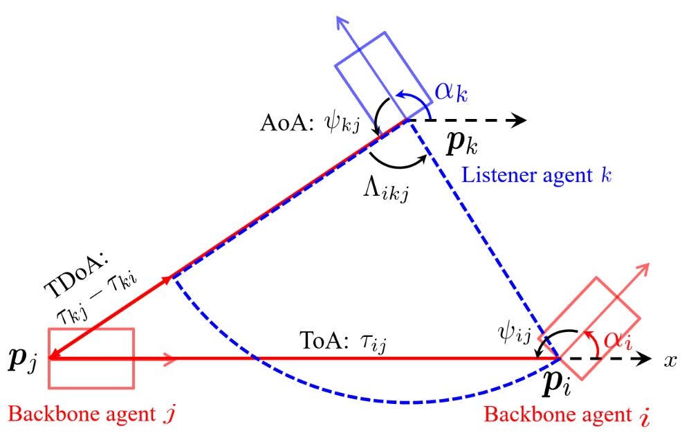 |
Simulation Results
Backbone agents
| Localization performance comparison of backbone agents |
|---|
| 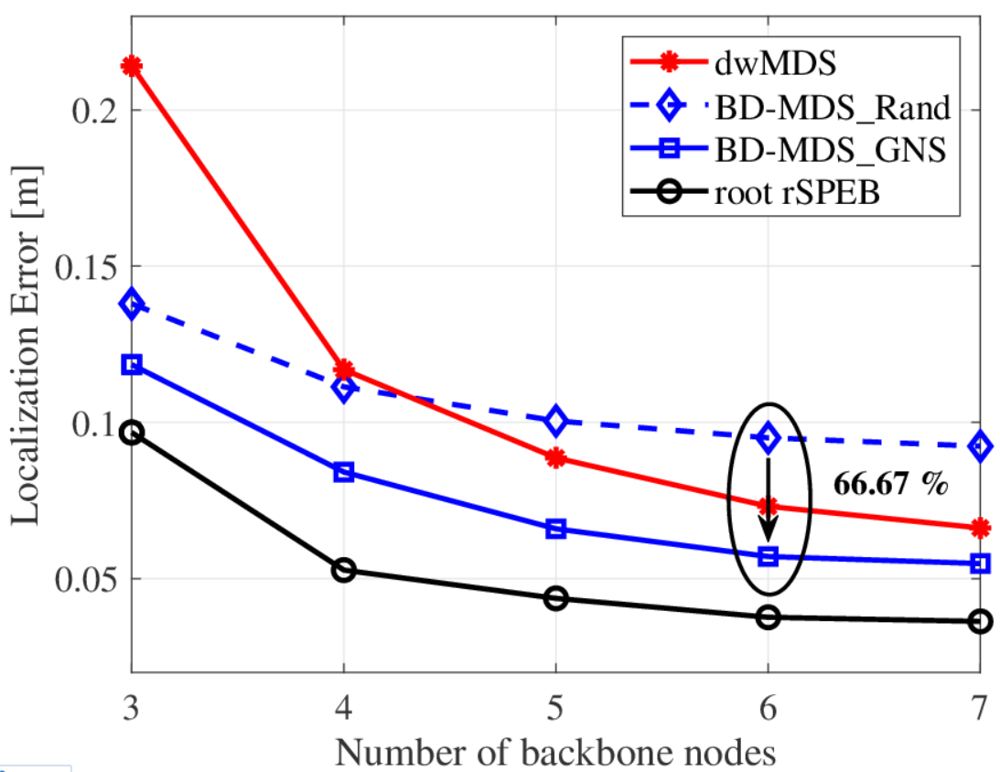 |
Listener agents
| CDF of the listener agents’ localization error |
|---|
| 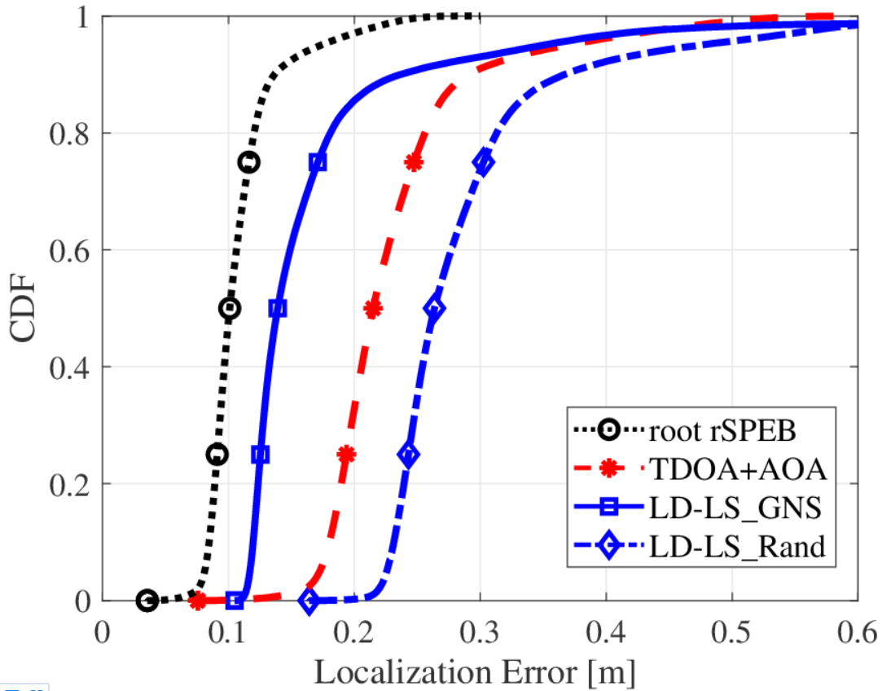 |
Hardware Implementation
Illustrations of the hardware platform
| The intelligent agent (vehicle) and its architecture diagram | ||
|---|---|---|
| 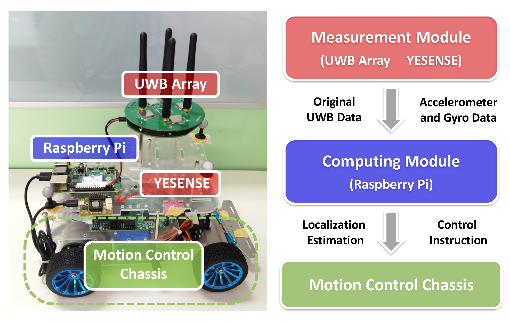 |
| Photo of the experiment in an actual scene |
|---|
| 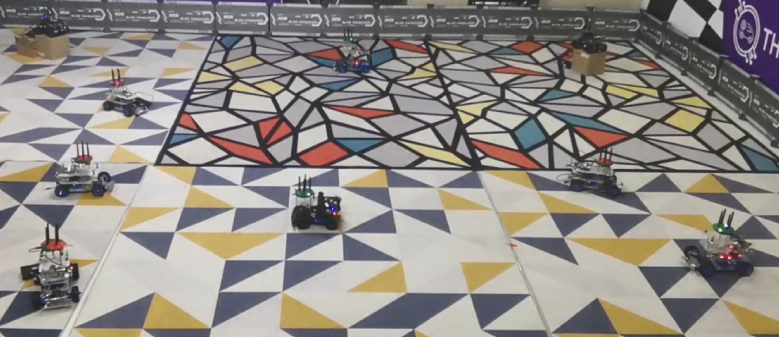 |
Rectangular placement
| Ideal topology | Estimated topology | Localization results |
|---|---|---|
| 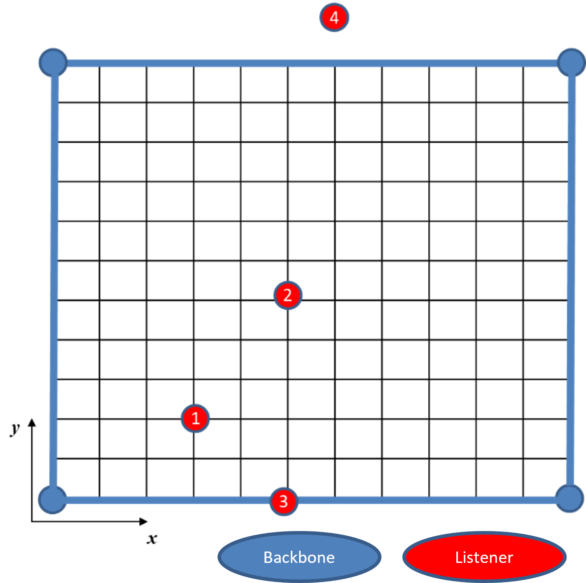 | 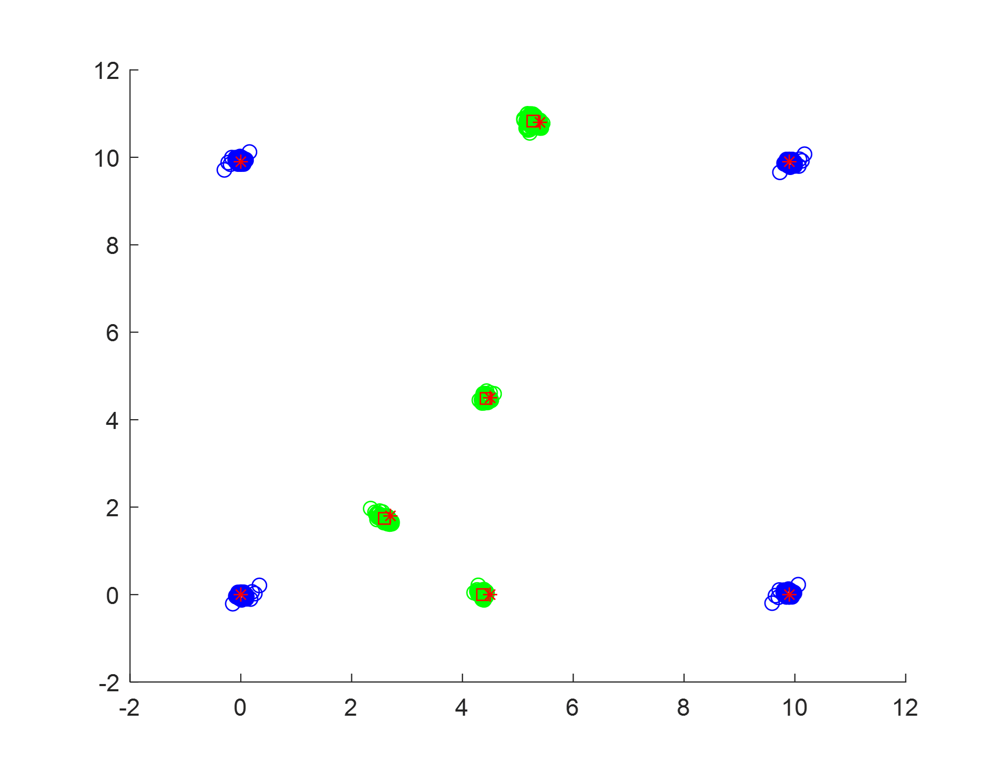 | 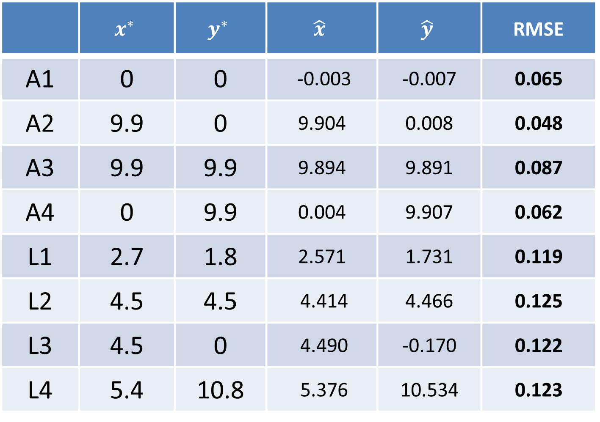 |
Trapezoidal placement
| Ideal topology | Estimated topology | Localization results |
|---|---|---|
| 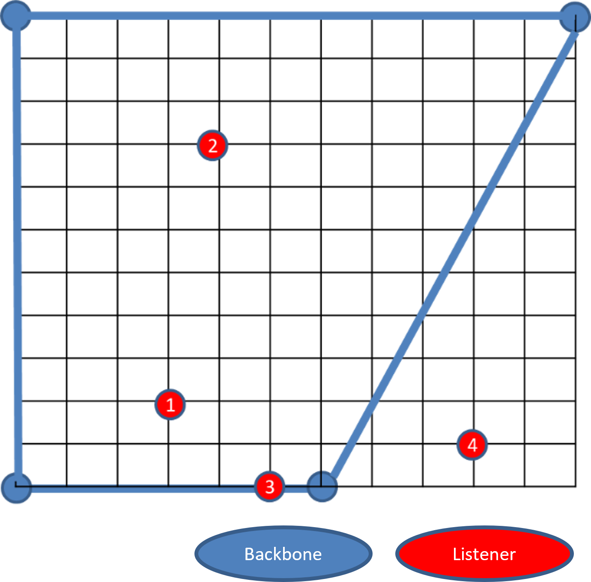 | 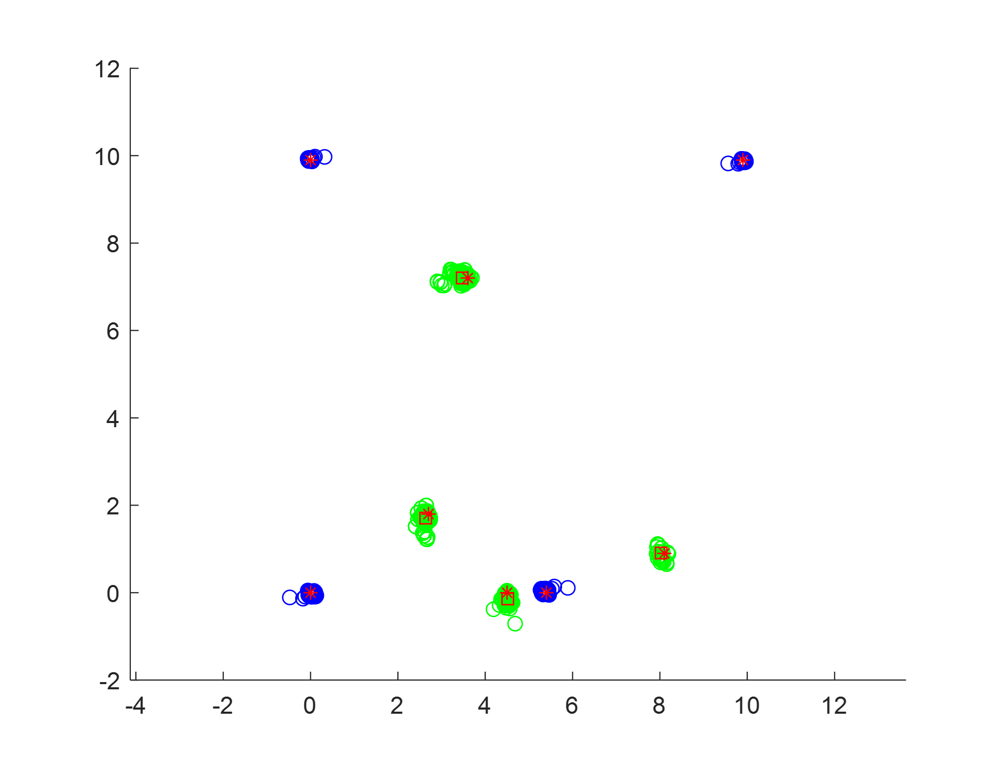 | 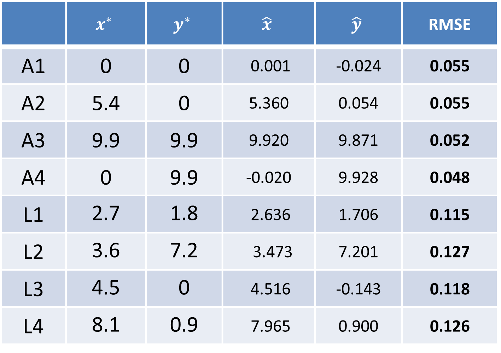 |
Random placement
| Ideal topology | Estimated topology | Localization results |
|---|---|---|
| 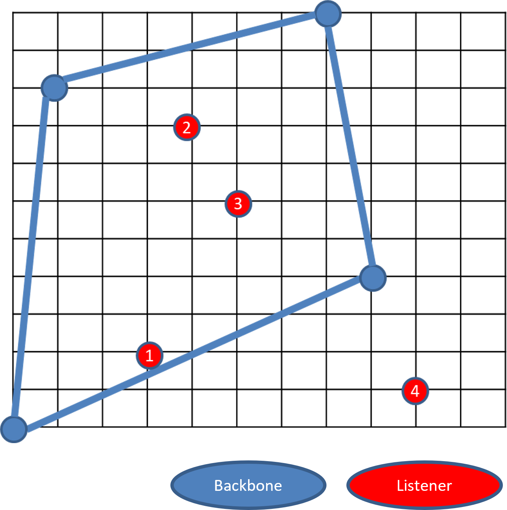 | 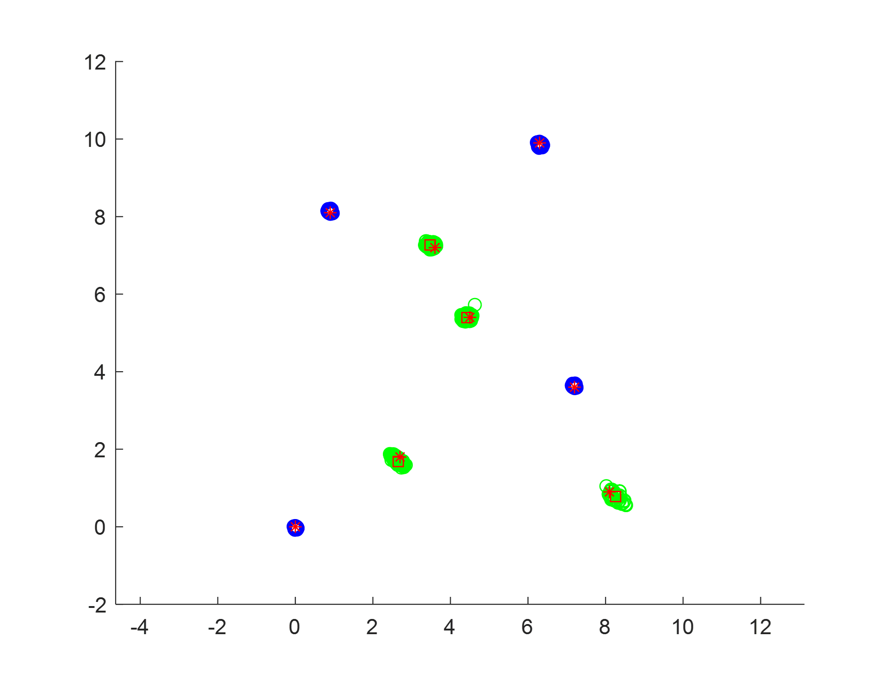 | 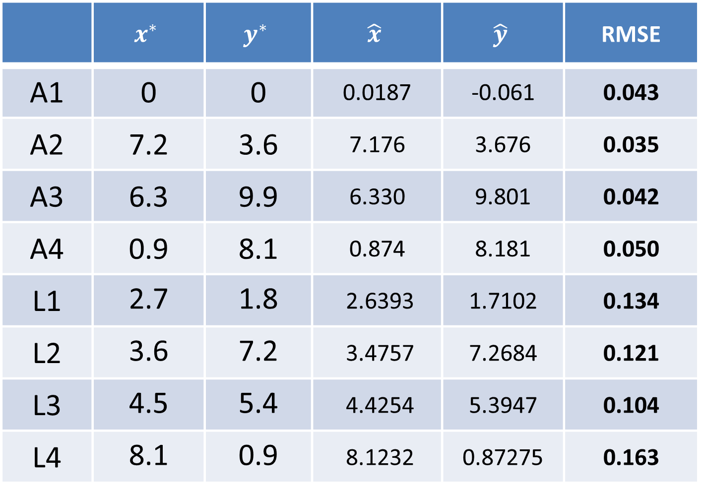 |
Our Related Works
Relative Formation and Obstacle Avoidance with Distributed Multi-agent Reinforcement Learning